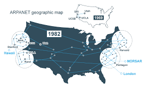

A Internet é uma rede global de computadores interconectados que permite a troca de informações e comunicação entre dispositivos. A Web, por outro lado, é um sistema de informações acessado através da Internet, utilizando navegadores para visualizar páginas e conteúdos. Em resumo, a Internet é a infraestrutura, enquanto a Web é o conteúdo que navega por essa infraestrutura.
A Internet começou como um projeto militar nos anos 60, conhecido como ARPANET. Em 1983, o TCP/IP se tornou o protocolo padrão, permitindo a comunicação entre diferentes redes. A World Wide Web foi criada em 1989 por Tim Berners-Lee, facilitando o acesso a informações através de navegadores.
Para mais informações, visite o site oficial da W3C.
| Ano | Evento |
|---|---|
| 1969 | ARPANET é criada |
| 1983 | TCP/IP se torna padrão |
| 1989 | Tim Berners-Lee cria a Web |
| Fonte: Wikipedia | |
Imagem da ARPANET:
Imagem da World Wide Web:
Relato de um usuário da Internet:
"A Internet mudou minha vida, permitindo que eu me conectasse com pessoas de todo o mundo e acessasse informações em segundos."
Marcação de destaque: Importante
Texto em itálico: Este é um exemplo de texto em itálico.
Texto em negrito: Este é um exemplo de texto em negrito.
Texto sublinhado: Este é um exemplo de texto sublinhado.
Texto com sobrescrito: Este é um exemplo de texto sobrescrito.
Texto com subscrito: Este é um exemplo de texto subscrito.
Texto com span: Este é um exemplo de texto com span.
Texto com div:
Texto com lista ordenada:
Texto com lista não ordenada:
Texto com lista de definição: